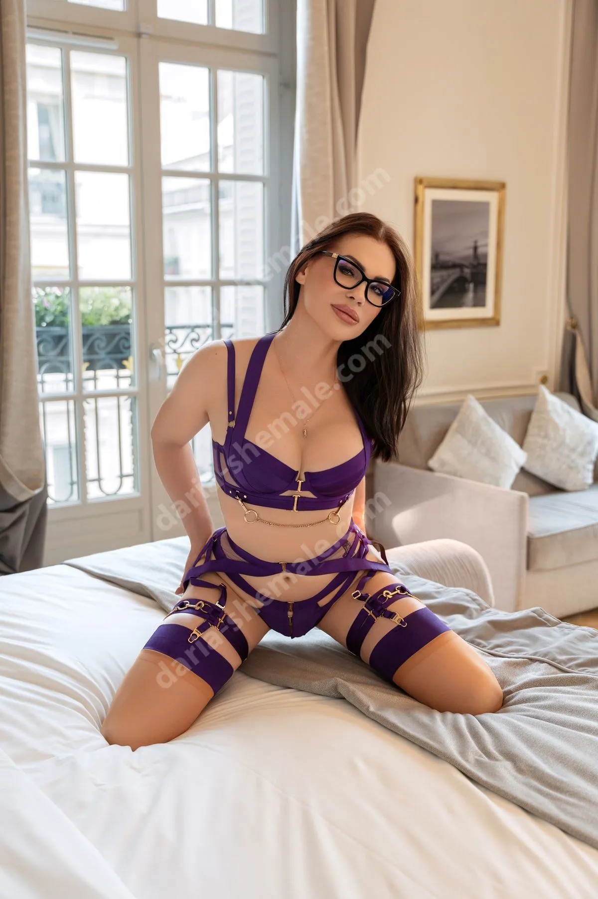

Transseksualna modelka TS

Miss Daria
Dziewczyna z niespodzianką. Trans modelka w Polsce i krajach europejskich.
Jeśli szukałeś przyjemności i estetycznej rozkoszy, Twoje poszukiwania dobiegły końca. Odłóż wszystkie sprawy na bok, zrelaksuj się i usiądź wygodniej.
Zadbam o Ciebie. Wszystko jest tu dla Twojej wygody: tutaj znajdziesz mnie , moje zdjęcia , przydatne informacje oraz odpowiedzi na wszystkie pytania . Osobiste spotkanie możemy umówić w każdej chwili – wystarczy skorzystać z danych kontaktowych .
Miss Daria
Trans dziewczyna. Trans modelka w Warszawie, Polska
Dużo podróżuję, ale mam kilka ulubionych miast, które odwiedzam najczęściej. Warszawa jest jednym z nich i właśnie tu teraz jestem.
Możemy spotkać się w moim apartamencie, w hotelu lub u Ciebie w domu, w zależności od tego, co jest dla Ciebie wygodniejsze. Ale tylko pod warunkiem, że Twoja lokalizacja znajduje się w granicach miasta i w zasięgu komunikacji miejskiej.
Nie powinieneś zakładać, że skoro jestem w mieście, to jestem wolna i dostępna na spotkanie o każdej porze dnia i nocy i mogę być gotowa nawet w 10-15 minut. Bardzo chętnie się z Tobą spotkam, ale szanujmy swój wzajemny czas i umawiajmy się z wyprzedzeniem – optymalnie na jedną do dwóch godzin, a jeszcze lepiej na dzień przed planowanym terminem. Potrzebuję czasu, aby się przygotować i pokazać się z jak najlepszej strony.
Swoją zgodę i poważne intencje możesz potwierdzić, wpłacając zadatek.
Mademoiselle Daria
Trans dziewczyna. Trans modelka w Paryżu, Francja
Paryż to kolejne miasto, w którym możesz się ze mną spotkać. To miasto świateł i kolorowych witryn sklepowych, ale ja wolę intymność i prywatność wygodnych pokoi hotelowych i przytulnych apartamentów.
Jeśli chcesz się ze mną zobaczyć, nie zapomnij skontaktować się ze mną wcześniej i ustalić dzień, godzinę i miejsce.
Najlepszym potwierdzeniem Twojej chęci spotkania będzie zadatek wpłacony z wyprzedzeniem.
Europa i inne kraje
Jestem otwarta na propozycje odwiedzenia wielu innych miast i krajów; na pewno znajdzie się kilka dni w moich Podróżach po miastach na miły czas z Tobą. Warto jednak planować każdy wyjazd z tygodniowym lub większym wyprzedzeniem, aby zdążyć załatwić wszystkie formalności i zebrać potrzebne informacje.
Po prostu skontaktuj się ze mną w dogodny dla Ciebie sposób, a omówimy dostępne opcje.
Podczas przeglądania strony koniecznie przeczytaj o mnie i zajrzyj do galerii – czekają tam na Ciebie moje uwodzicielskie zdjęcia w różnych stylizacjach , zobaczysz, jak różna potrafię być dla Ciebie. Strona FAQ oraz blog pomogą Ci przygotować się do naszego spotkania i poznać mnie trochę bliżej.
Najnowsze wpisy na blogu

12 pytań, których nie powinieneś zadawać trans dziewczynom
Miła rozmowa to klucz do udanego czasu. Podczas rozmowy najczęściej się rozluźniamy i czujemy się swobodniej oraz spokojniej w towarzystwie osoby, której jeszcze dobrze nie znamy.
Czytaj więcej
Dlaczego spotkania z parami to moje niepodlegające negocjacjom tabu?
Bądźmy szczerzy, w większości przypadków zaproszenie trzeciej osoby do swojego życia seksualnego to próba załatania dziur w związku. Zazwyczaj jedno z partnerów zgadza się na to bardzo niechętnie (i tak, częściej są to kobiety).
Czytaj więcej
Podążaj za moją podróżą: pasja bez granic
Czy czułeś kiedyś to elektryzujące napięcie, gdy przygoda jest o jedno uderzenie serca stąd? Dla mnie podróże to nie tylko pasja, to sposób na życie. Przemieszczam się z miasta do miasta, podążając za wezwaniem nowych doświadczeń i tworząc chwile, które pozostają na długo po moim wyjeździe.
Czytaj więcej
12 pytań, których nie powinieneś zadawać trans dziewczynom
Miła rozmowa to klucz do udanego czasu. Podczas rozmowy najczęściej się rozluźniamy i czujemy się swobodniej oraz spokojniej w towarzystwie osoby, której jeszcze dobrze nie znamy.
Czytaj więcej
Dlaczego spotkania z parami to moje niepodlegające negocjacjom tabu?
Bądźmy szczerzy, w większości przypadków zaproszenie trzeciej osoby do swojego życia seksualnego to próba załatania dziur w związku. Zazwyczaj jedno z partnerów zgadza się na to bardzo niechętnie (i tak, częściej są to kobiety).
Czytaj więcej
Podążaj za moją podróżą: pasja bez granic
Czy czułeś kiedyś to elektryzujące napięcie, gdy przygoda jest o jedno uderzenie serca stąd? Dla mnie podróże to nie tylko pasja, to sposób na życie. Przemieszczam się z miasta do miasta, podążając za wezwaniem nowych doświadczeń i tworząc chwile, które pozostają na długo po moim wyjeździe.
Czytaj więcej